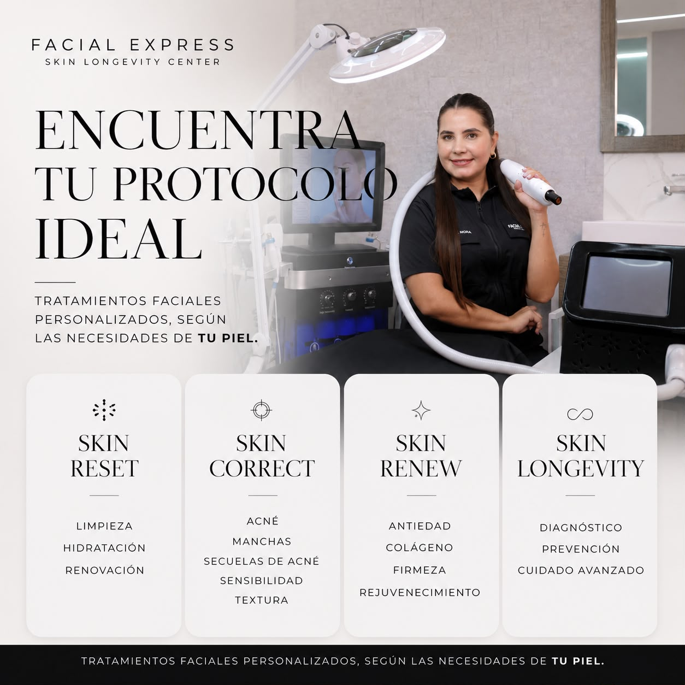

ESTÉTICA AVANZADA · CUIDADO PERSONALIZADO
Tu piel tiene
una historia.
Escuchémosla.
Cada piel necesita algo diferente. Descubre por dónde empezar con un cuidado pensado para ti.
¿Qué te gustaría mejorar?Unas preguntas. Un primer paso más claro.
Tu piel, en el centro.
01 / ENCUENTRA TU PUNTO DE PARTIDA
¿Qué te gustaría
mejorar?
No necesitas conocer el nombre de un tratamiento.
Cuéntanos qué buscas y te orientamos.
Orientación inicial. El protocolo adecuado se define tras una evaluación profesional.
02 / NUESTRAS LÍNEAS DE CUIDADO
Una piel única.
Un cuidado personal.
Cuatro líneas para explorar tus necesidades.
Un mismo enfoque: conocerte primero.

03 / LA EXPERIENCIA FACIAL EXPRESS
Más que elegir.
Comprender tu piel.
El primer paso es escuchar lo que necesitas. Después, evaluar tu piel y conversar sobre las opciones adecuadas para ti.
01Nos cuentas qué buscasTu objetivo es el punto de partida.
02Evaluamos tu pielUna orientación profesional y personalizada.
03Definimos el siguiente pasoConoce tu cuidado y resuelve tus dudas.
ANTES DE EMPEZAR
Resolvemos tus dudas.
¿Y si no sé qué servicio necesito?
Puedes elegir “No estoy segura” en nuestro selector o solicitar una evaluación directamente. No tienes que escoger un protocolo por tu cuenta.
¿El cuestionario diagnostica mi piel?
No. Te ayuda a explorar nuestras líneas de cuidado. La evaluación profesional determina qué opciones son adecuadas y si necesitas atención dermatológica.
¿Puedo agendar sin responder las preguntas?
Sí. Usa el botón “Agendar evaluación” en cualquier momento.
¿Cómo funciona la reserva en este demo?
Puedes probar el formulario y ver el resumen de tu solicitud. No se envía información ni se crea una cita real. La conexión con la agenda o WhatsApp se incorporará con los datos de Facial Express.
TU PRIMER PASO